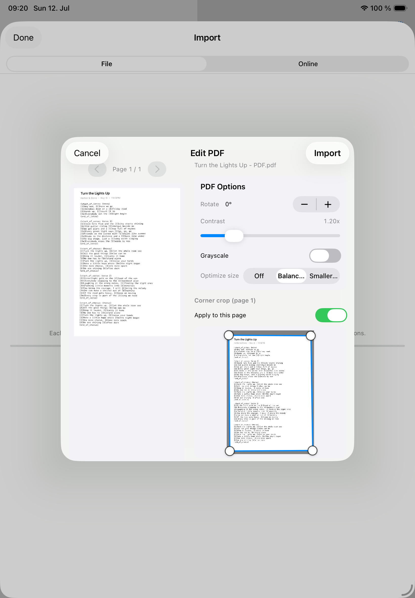

Scans
PDFs
Use PDFs for lead sheets, scanned charts, and documents where the original page layout should stay fixed.
PDFs follow the same library rules as ChordPro songs: import into the selected library, check the preview, and verify readability before the show.
Prepare a PDF
- Import the PDF into the correct personal or band library.
- Review the preview before saving.
- Rotate pages that were scanned sideways.
- Crop or correct perspective when a page was photographed.
- Apply contrast, grayscale, or optimization presets when readability improves.

When to choose ChordPro instead
Choose ChordPro when you need editable lyrics, transposition, notation changes, or flexible text layout. Choose PDF when the original page layout is the source of truth.